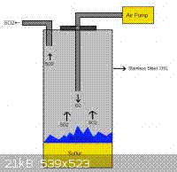

The burning sulfur will constantly tend to go out in this scheme unless the air stream is quite fast and the liquid sulfur is absorbed onto a porous refractory substance to provide a large surface area for burning.
I have observed that pieces of kaowool (ceramic fibre) impregnated with sulfur and set alight are almost impossible to extinguish by blowing out, and will burn (the blue flame is only barely visible in daylight, so watch out) for quite a long time. This observation could come in useful here.
Another problem is that the SO2 will always be mixed with an excess of air when it is generated by burning sulfur.
For generating SO2 at home you should buy some K or Na metabisulfite and add HCl to that in a gas generator. The SO2 so obtained is pure and only has to be dried when it is required anhydrous.
The reaction of aqueous HCl with metabisulfite is very endothermic and the gas generating flask gets very cold (far below 0°C)- so cold actually that a large amount of the SO2 stays dissolved in the aqueous chloride solution. The flask should be immersed in a warm water bath and either shaken manually or magnetically stirred to liberate all of the SO2.
It does matter which acid you use. The reaction with sulphuric acid will be exothermic as dilution with the water formed in the reaction will generate a lot of heat.
If you use concentrated sulphuric acid, quite dry sulphur dioxide will pour off.
You can distill SO2 at -10°C.
The following is taken from a another thread in Sciencemadness.org called "SO2 GENERATOR".
Don't you have access to sulfites or (meta)bisulfites. A lovely generator can be made by mixing H2SO4 with an equal volume of water, and then adding sulfite or (meta)bisulfite to this. Slight heating gives a smooth and not too fast generation of lots of SO2. You don't need strong heating, and that is a pleasant thing.
If you don't have sulfites, then indeed copper metal could be used, but the problem with this method is that a large excess of sulphuric acid is needed. Use of elemental sulphur buring in oxygen also can be used, but the problem with this is that it does not give pure SO2, but SO2 mixed with a lot of air or oxygen. A practical problem with that approach is to lead it through something. You don't have a pressurized source, because formation of SO2 from S and O2 does not lead to formation of more volume of gas from solid (each SO2 takes one O2). When copper/concentrated sulphuric acid, or sulfite/medium conc. sulphuric acid, is used, then you can have a closed flask, in which SO2 is formed.
Note below from thread on using Camden tablets (Sodium Metabisulphite)
I don't know about impurities, but they wouldn't really matter that much. Most impurities probably won't affect the SO2 made, but that depends on what acids you use. If there is chlorides in your winemaking tablets, for example, and you use sulfuric acid, the resulting evolution of HCl gas will ruin your SO2.
Sulfuric acid isn't actually a good candidate acid for generating SO2, as other soluble gases generated might contaminate the SO2, and also the fact that SO2 dissolves in sulfuric acid more than water. So your best acid choice would be HCl solution, as that prevents the formation of hydrogen halides.
But almost all acids work (well, apart from a few exceptions that are extremely weak acids/oxidizing acids like HNO3, which will oxidize the SO2 produced to sulfuric acid, and HClO/H2CO3, which almost certainly doesn't work) by this equation: Na2S2O5(s/aq)+2H+(aq?)==>2SO2(g)+H2O+2Na+(aq). The SO2 exits the solution as a gas, making this reaction favourable, so even weak acids (like acetic acid) works. But not a dilute solution though (if you used vinegar, the yield will not be great compared to if you used 25% acetic acid.)
HIT THE BACK BUTTON ON YOUR BROWSER